Engineering degree, ENSEEIHT (Toulouse INP)
Systems & Networks track (ASR). Admitted directly into second year. Expected graduation: 2028.
From Nouméa to Toulouse: 17,200 km to become an engineer.
New Caledonia. This is where it all begins.
Tutored project: a 4096-bit RSA library in C, hardened against side-channel attacks.
Banque Calédonienne d'Investissement, BCInet online banking. Angular, Spring Boot, Spring Batch, Liquibase, Azure DevOps.
Bachelor's degree with highest honours.
17,200 km · UTC+2
Engineering degree in computer science, Toulouse INP. Admitted directly into second year.
I'm looking for an internship for summer 2027, and I'd be glad to talk with you about it.
Get in touch →I'm an engineering student at ENSEEIHT (Toulouse INP), in the Systems & Networks track (ASR).
I grew up in Nouméa, New Caledonia. I studied for my bachelor's degree in computer science at the University of New Caledonia, where I finished first in my year, with highest honours (mention Très Bien).
In 2026 I moved 17,200 km to Toulouse, where I was admitted directly into the second year of the engineering programme.
I'm looking for an internship for summer 2027. If my profile interests you, I'd be delighted to hear from you!
Je suis élève ingénieur à l'ENSEEIHT (Toulouse INP), dans la filière Systèmes et Réseaux (ASR).
J'ai grandi à Nouméa, en Nouvelle-Calédonie. J'ai fait ma licence d'informatique à l'Université de la Nouvelle-Calédonie, que j'ai terminée major de promotion, avec la mention Très Bien.
En 2026, je suis parti à Toulouse, à 17 200 km, où j'ai été admis directement en deuxième année du cycle ingénieur.
Je suis à la recherche d'un stage pour l'été 2027. Si mon profil vous intéresse, je serais ravi d'échanger avec vous !
Even though computing is my passion, I'm above all a curious person, always eager to learn. I love understanding how the world works, which is why I have many different passions.
Click or tap a photo to see it full size.
I photograph nebulae and galaxies, such as the Carina Nebula, M83 and the Sombrero Galaxy (M104).
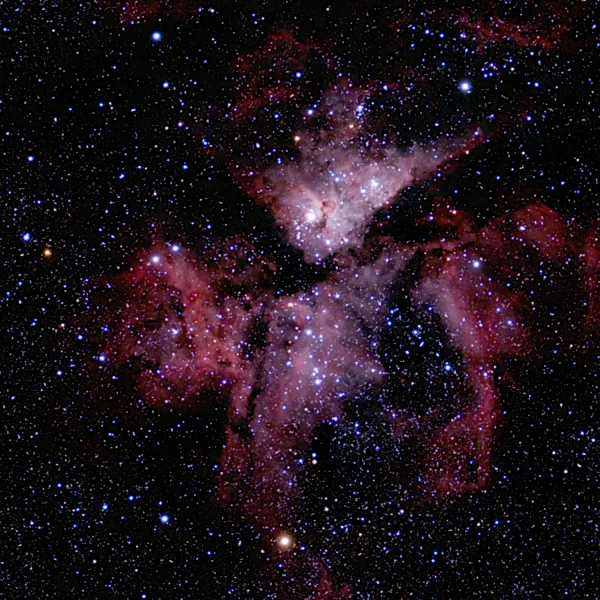
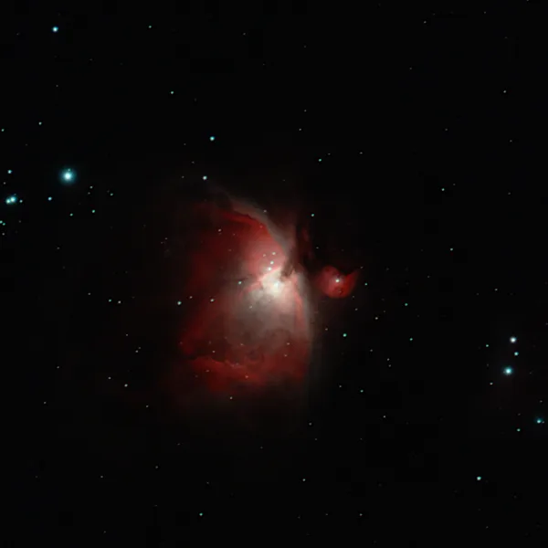
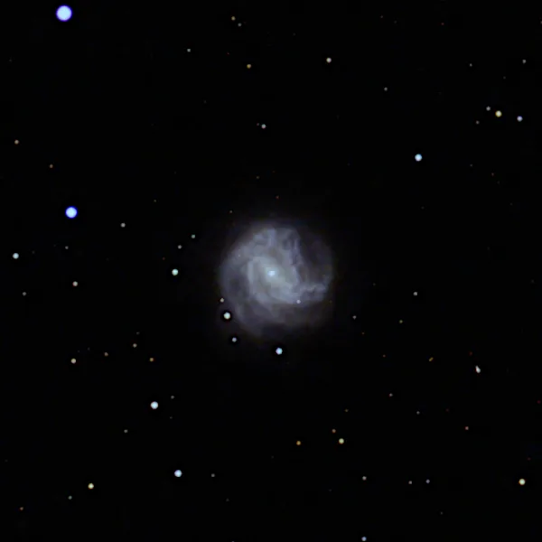
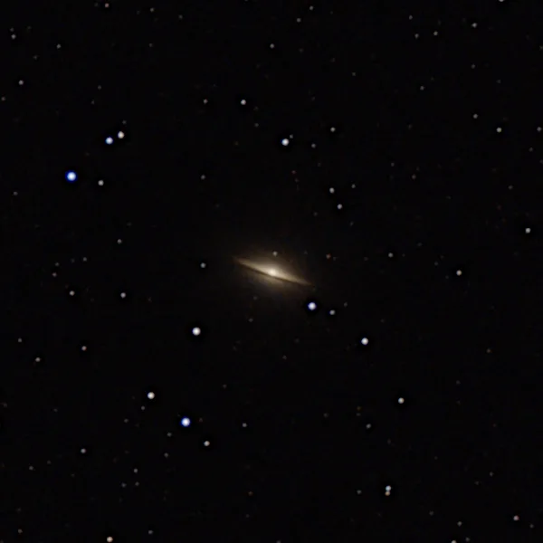
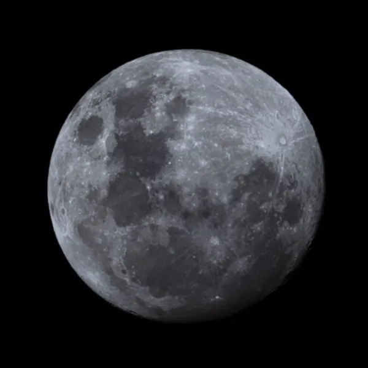
Building a wooden deck, from the frame to the decking boards.
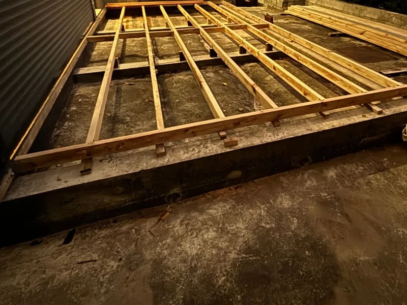
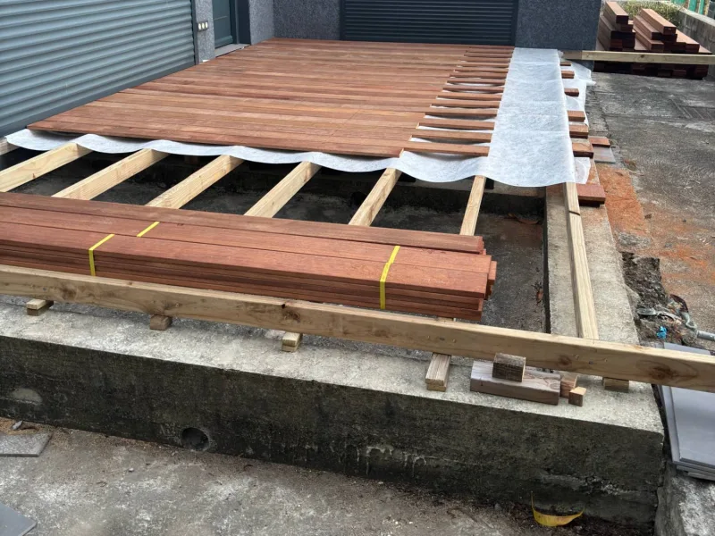
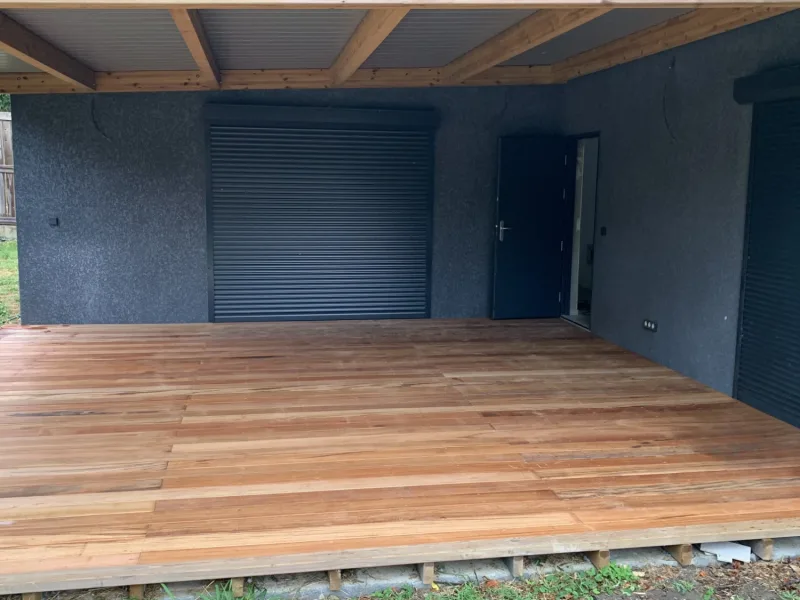
I solder and 3D-print parts. I'm currently working on a BC-250 (an AMD board originally made for cryptocurrency mining) that I completely rebuilt and fully unlocked. I use it as a server that I can reach from anywhere with Tailscale.
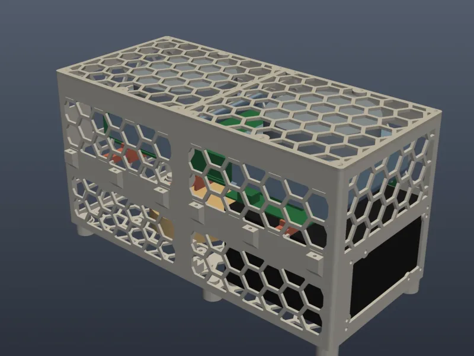
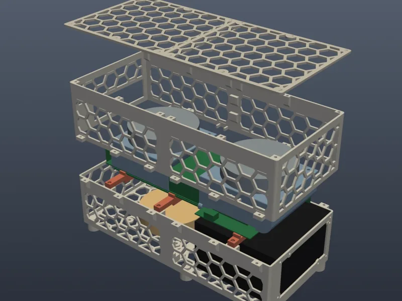
I had started training for my private pilot licence (PPL), but had to stop because of the riots in New Caledonia. Aviation is still a big passion of mine.
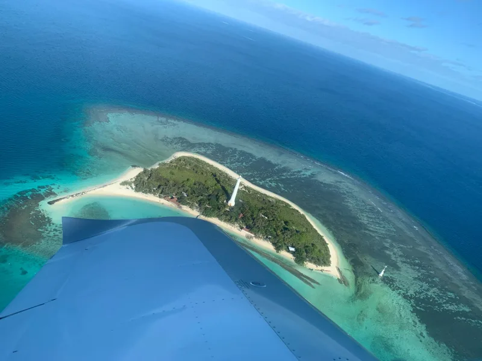
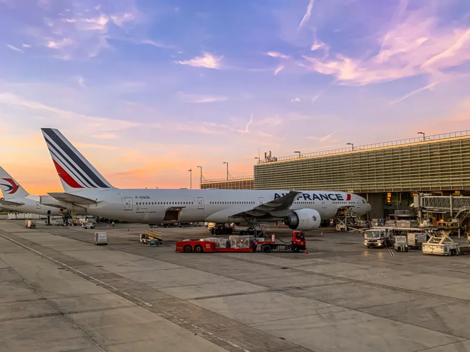
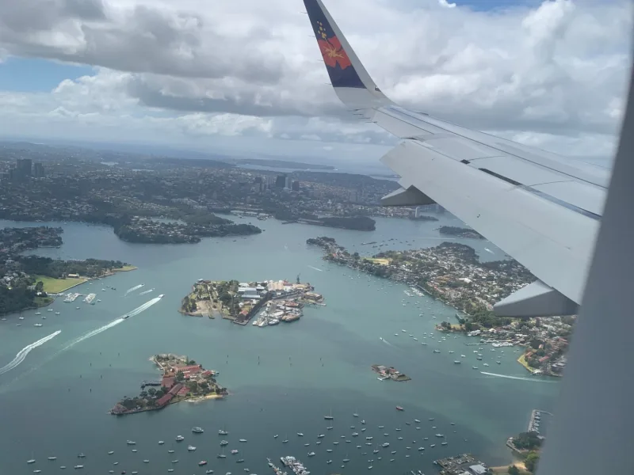
I was passionate about finance long before my internship, especially when it comes to tech companies such as Nvidia, AMD and Big Tech. I like following the markets because they help me understand the world and how it works, and they are closely tied to the news. I also invest personally, mostly in US markets. My internship at BCI confirmed this passion: I loved working in banking, where I also saw payment systems up close.
Systems & Networks track (ASR). Admitted directly into second year. Expected graduation: 2028.
Finished first in my year, with highest honours (mention Très Bien).
Courses included software engineering, object-oriented programming in Java, algorithms, databases, operating systems, networks, cryptography, and electricity and electronics.
Filière Systèmes et Réseaux (ASR). Admis directement en deuxième année. Diplôme prévu en 2028.
Major de promotion, avec la mention Très Bien.
Cours suivis, entre autres : génie logiciel, programmation orientée objet en Java, algorithmique, bases de données, systèmes d'exploitation, réseaux, cryptographie, électricité et électronique.
I worked on BCInet, the bank's online banking service: more than 80,000 subscribers and around 30,000 unique visits a day. I was part of an Agile Scrum team.
What I worked on:
J'ai travaillé sur BCInet, la banque en ligne de la BCI : plus de 80 000 abonnés et environ 30 000 visites uniques par jour. Je faisais partie d'une équipe Agile Scrum.
Ce sur quoi j'ai travaillé :
RSA is one of the most widely used public-key encryption methods. This project is a C library that implements RSA with 4096-bit keys.
What is a side-channel attack? Instead of breaking the maths, the attacker watches the machine while it computes (how long it takes, how much power it uses) and works out the secret key from that.
RSA est l'une des méthodes de chiffrement à clé publique les plus utilisées. Ce projet est une bibliothèque en C qui met en œuvre RSA avec des clés de 4096 bits.
Une attaque par canal auxiliaire, c'est quoi ? Au lieu de casser les mathématiques, l'attaquant observe la machine pendant qu'elle calcule (le temps qu'elle met, l'électricité qu'elle consomme) et en déduit la clé secrète.
Grouped by the step of my journey where I used them.
Regroupées selon l'étape de mon parcours où je les ai utilisées.
I'm looking for an internship for summer 2027. The easiest way to reach me is LinkedIn: feel free to send me a message, I'll be happy to reply.
Je suis à la recherche d'un stage pour l'été 2027. Le plus simple pour me joindre est LinkedIn : n'hésitez pas à m'y écrire, je vous répondrai avec plaisir.